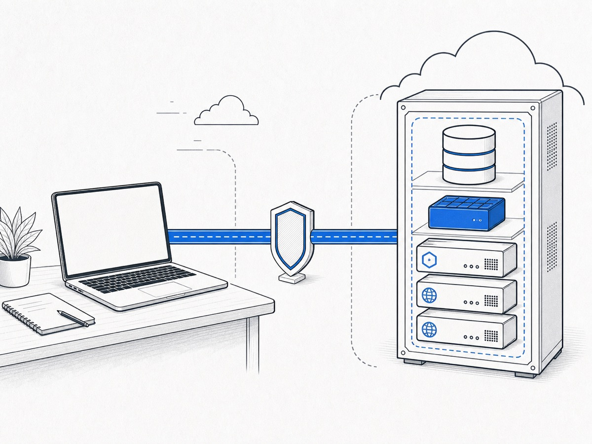

서버에 배포된 웹을 보는 방식과 로컬 앱이 공유 DB를 쓰는 방식을 혼동하지 않습니다.
OneSearch shared development
Lightsail dev 연결 가이드
SSH 터널을 열고, 올바른 프로세스를 올바른 데이터에 연결하는 원써치 공동 개발 가이드.
터널이 열렸다는 사실만으로는 충분하지 않습니다. 실행 위치, 포트, .env, worker 경계가 함께 맞아야 합니다.

먼저 읽으면 좋은 글
SSH 터널의 방향, loopback, 키 인증을 먼저 이해하면 원써치 명령이 외울 것이 아니라 구조로 보입니다.
English
Using SSH port forwarding on Fedora
로컬 포워딩에서 왜 원격 목적지를 localhost로 쓰는지 가장 선명하게 설명합니다.
English
How To Set Up SSH Tunneling on a VPS
loopback과 로컬 포트가 원격 서비스로 이어지는 과정을 예제로 확인할 수 있습니다.
한국어
SSH 터널링 및 포트 포워딩 시각 가이드
-L, -R, -D의 방향 차이를 그림처럼 비교해 볼 수 있습니다.
한국어
Lightsail에 대한 SSH 키 설정
AWS 공식 문서에서 public key와 private key의 역할, Lightsail 키 관리의 기본 경계를 확인합니다.
이 자료를 마치면
명령을 따라 치는 데서 멈추지 않고, 지금 어떤 컴퓨터의 어떤 프로세스가 어떤 데이터에 연결되는지 설명할 수 있습니다.
관리자만 하는 일과 일반 개발자가 하는 일을 구분하고 AWS 권한을 넘기지 않습니다.
포트가 열렸다는 추측 대신 pnpm shared:check로 실제 DB, Redis, 환경 계약을 확인합니다.
worker 중복 실행과 reset, seed, flush처럼 다른 개발자에게 피해를 주는 행동을 피합니다.
먼저, 두 방식은 실행 위치가 다릅니다
같은 Lightsail 서버와 같은 SSH 터널을 써도 브라우저가 바라보는 앱이 어디서 실행되는지에 따라 작업 목적이 달라집니다.
테스트용 웹 배포
커밋된 master의 API, 관리자 웹, 고객 웹을 Lightsail 서버 프로세스로 확인합니다.
개발자 브라우저
SSH local forwarding
Lightsail의 API, 관리자 웹, 고객 웹
23100API23200관리자 웹23300고객 웹로컬 앱 + Lightsail DB·Redis
API와 두 웹은 개발자 컴퓨터에서 실행하고 PostgreSQL과 Redis만 Lightsail의 공용 개발 데이터를 씁니다.
로컬 웹 13200, 13300
로컬 API 13100
터널 25432, 26379을 거친 Lightsail 데이터
13100로컬 API13200로컬 관리자13300로컬 고객25432PostgreSQL26379Redis
worker는 두 방식 모두 Lightsail에서 하나만 실행합니다.
개발자 컴퓨터에서 worker를 추가로 켜면 같은
shared_dev: queue를 중복 소비할 수 있습니다.
권한은 연결보다 먼저 나눕니다
일반 개발자가 필요한 것은 제한된 SSH forwarding 계정과 앱 실행용 설정입니다. AWS 운영 권한이나 서버 shell은 필요하지 않습니다.
| 역할 | 가지는 것 | 하지 않는 것 |
|---|---|---|
| 레포 관리자 | AWS CLI와 profile, 서버 관리자 key, 개발자 등록과 해제, 배포, backup, migration | 자기 전체 .env나 서버 관리자 key를 개발자에게 전달하지 않음 |
| 일반 개발자 | 자기 private key, Git 제외 루트 .env, dev-lightsail SSH profile |
AWS CLI, sudo, systemctl, 서버 생성과 삭제를 하지 않음 |
| 제한된 SSH 계정 | 정해진 다섯 loopback 목적지로 가는 local forwarding | shell, TTY, sudo, 임의 목적지 forwarding을 사용하지 않음 |
전달해도 되는 것
- 개발자의 public key 한 줄
age로 암호화한 최소 앱 설정 파일- SSH host와 제한된 서버 사용자명
전달하면 안 되는 것
- private key 내용
- 관리자의 전체
.env - AWS credential과 profile
- 서버 관리자 key, root, sudo 권한
한 번 설정하는 흐름
경로와 이름은 개발자마다 다를 수 있습니다. 아래 placeholder를 실제 값으로 바꾸되, 비밀값을 문서나 공개 채널에 복사하지 않습니다.
관리자: 계정 등록
개발자의 public key로 제한된 계정을 만듭니다
private key는 개발자 컴퓨터에서 나오지 않습니다. 관리자는 public key 파일만 받아 등록합니다.
repository root
infra/lightsail/dev-data/register-developer.sh \
"<developer-user>" "/absolute/path/to/developer.pub"관리자와 개발자: 앱 설정 전달
최소 .env 블록을 먼저 암호화합니다
Magic Wormhole이나 croc은 전달 수단입니다. 파일 내용 보호는 age가 담당하므로 암호화된 .age 파일만 보냅니다.
developer Mac
age --decrypt \
-i "/absolute/path/to/private-key" \
-o .env lightsail-dev.env.age
chmod 600 .env
rm -f -- lightsail-dev.env.age공개 페이지, Git, 이슈, 채팅방에 실제
.env 값이나 private key 내용을 붙여넣지 않습니다.개발자: SSH profile
SSH 좌표와 다섯 forwarding을 dev-lightsail에 모읍니다
앱 설정은 루트 .env, SSH 접속 정보는 사용자 ~/.ssh/config에 둡니다. 둘을 섞지 않습니다.
~/.ssh/config
Host dev-lightsail
HostName <administrator-provided-host>
User <developer-user>
IdentityFile /absolute/path/to/private-key
IdentitiesOnly yes
BatchMode yes
ConnectTimeout 15
ServerAliveInterval 30
ServerAliveCountMax 3
ExitOnForwardFailure yes
StrictHostKeyChecking yes
UserKnownHostsFile ~/.ssh/onesearch-platform-lightsail-known-hosts
LocalForward 127.0.0.1:23100 127.0.0.1:23100
LocalForward 127.0.0.1:23200 127.0.0.1:23200
LocalForward 127.0.0.1:23300 127.0.0.1:23300
LocalForward 127.0.0.1:25432 127.0.0.1:5432
LocalForward 127.0.0.1:26379 127.0.0.1:6379개발자: host key 고정
저장소의 pinned host key를 사용자 SSH 경로로 복사합니다
StrictHostKeyChecking yes는 예상한 서버의 host key와 실제 서버가 일치해야 연결을 허용합니다.
macOS or Linux
mkdir -p ~/.ssh
chmod 700 ~/.ssh
install -m 600 \
infra/lightsail/dev-data/shared-dev-known-hosts \
~/.ssh/onesearch-platform-lightsail-known-hosts
chmod 600 ~/.ssh/config
ssh -G dev-lightsail >/dev/nullmacOS 선택 사항
암호가 있는 key를 로그인 후 자동 tunnel에도 사용합니다
Keychain은 SSH private key의 암호 해제만 담당합니다. DB, Redis, JWT 값은 여전히 루트 .env에만 둡니다.
dev-lightsail profile and shell
IgnoreUnknown UseKeychain
UseKeychain yes
AddKeysToAgent yes
ssh-add --apple-use-keychain /absolute/path/to/private-key로그인 후 자동 연결이 꼭 필요할 때만 infra/lightsail/dev-data/tunnel-launch-agent.sh install을 사용합니다.
매일 실행하는 최소 흐름
최초 설정이 끝난 뒤에는 터널, 연결 검사, 코드 동기화, 로컬 앱 실행만 기억하면 됩니다.
everyday flow
pnpm tunnel:shared
# 새 터미널에서
pnpm shared:check
git pull --ff-only origin master
pnpm dev:shared터널 터미널을 엽니다
pnpm tunnel:shared는 .env를 읽지 않고 ssh -N -T dev-lightsail을 실행합니다. foreground 터미널을 닫으면 터널도 끊깁니다.
실제 연결 계약을 확인합니다
pnpm shared:check로 PostgreSQL 인증, Redis read/write/publish 권한, 포트, prefix, adapter 설정을 확인합니다.
코드를 fast-forward로 맞춥니다
git pull --ff-only origin master는 예상하지 못한 merge commit을 만들지 않고 현재 작업 기준을 맞춥니다.
로컬 앱 세 개만 실행합니다
pnpm dev:shared는 API, 관리자 웹, 고객 웹만 켭니다. worker와 mobile은 실행하지 않습니다.
어디를 열어야 하는지 빠르게 확인하기
주소의 앞자리가 비슷해도 13xxx는 로컬 앱, 23xxx는 Lightsail 테스트용 웹 배포입니다.
| 목적 | 개발자 컴퓨터 주소 | 실행 위치 |
|---|---|---|
| 로컬 API와 Socket.IO | http://127.0.0.1:13100 | 개발자 컴퓨터 |
| 로컬 관리자 웹 | http://127.0.0.1:13200 | 개발자 컴퓨터 |
| 로컬 고객 웹 | http://127.0.0.1:13300 | 개발자 컴퓨터 |
| 공유 PostgreSQL | 127.0.0.1:25432 | 터널 뒤 Lightsail |
| 공유 Redis DB 1 | 127.0.0.1:26379 | 터널 뒤 Lightsail |
| 배포된 API와 Socket.IO | http://127.0.0.1:23100 | Lightsail |
| 배포된 관리자 웹 | http://127.0.0.1:23200 | Lightsail |
| 배포된 고객 웹 | http://127.0.0.1:23300 | Lightsail |
포트가 listening 상태라는 사실은 앱이 그 포트를 사용한다는 증거가 아닙니다.
일반
pnpm dev가 개인 local 데이터로 실행될 수도 있습니다. Lightsail dev를 쓸 때는 반드시 pnpm shared:check와 pnpm dev:shared를 사용합니다.
헷갈리기 쉬운 경계를 정확히 잡기
겉으로 비슷해 보여도 아래 구분을 놓치면 다른 환경을 수정하거나 파일 테스트를 잘못 해석할 수 있습니다.
터널은 길을 만들고 .env는 앱이 그 길을 쓰도록 지정합니다. 하나만 맞으면 연결이 완성되지 않습니다.
DB URL, Redis URL, prefix, JWT와 암호화 호환, adapter 설정이 함께 바뀌어야 합니다.
실시간 메시지는 로컬 API와 Socket.IO Redis adapter로 오갈 수 있습니다. worker는 알림과 후속 작업을 한 번만 처리합니다.
현재 파일 저장소는 API별 local disk입니다. 첨부 생성과 삭제는 같은 테스트용 웹 배포 흐름 안에서 처음부터 검증합니다.
공유 환경에서는 하지 않는 행동
Lightsail dev는 여러 개발자가 같은 PostgreSQL, Redis DB 1, shared_dev: namespace를 사용합니다. 개인 local처럼 다루면 안 됩니다.
pnpm dev
worker와 mobile까지 포함할 수 있습니다. 공유 데이터에는 pnpm dev:shared만 사용합니다.
pnpm env:up / env:down
개인 local 인프라용 흐름입니다. Lightsail dev를 쓰는 checkout에서 실행하지 않습니다.
reset / db push
prisma migrate reset과 prisma db push는 공유 schema와 데이터를 망가뜨릴 수 있습니다.
seed / restore / truncate
공유 데이터를 대량 변경하는 명령은 개인 local에서만 실험하고 관리자 절차 없이 실행하지 않습니다.
Redis flush
FLUSHDB와 FLUSHALL은 세션, presence, queue, adapter 상태를 한꺼번에 지울 수 있습니다.
개발자 worker 추가 실행
서버 worker와 같은 queue를 중복 소비해 알림이나 후속 작업이 두 번 처리될 수 있습니다.
문제가 생기면 증상에서 경계로 거슬러 올라갑니다
추측으로 설정을 더 넣기 전에 SSH, 터널, 앱 환경, 서버 서비스 중 어디서 끊겼는지 분리합니다.
SSH timeout이 납니다
인터넷 연결과 ssh -G dev-lightsail 출력을 먼저 확인합니다. SSH profile의 host, 사용자, key 경로와 서버 상태는 관리자와 확인합니다. 일반 개발자는 AWS CLI를 실행하지 않습니다.
Permission denied (publickey)가 나옵니다
IdentityFile 경로, IdentitiesOnly yes, 등록된 public key와 현재 private key의 짝을 확인합니다. private key 내용을 관리자에게 보내지 않습니다.
local port가 이미 사용 중이라고 나옵니다
기존 foreground tunnel이나 macOS LaunchAgent tunnel이 이미 실행 중인지 확인합니다. 같은 23100, 23200, 23300, 25432, 26379를 두 프로세스가 동시에 열 수 없습니다.
shared:check가 15432 또는 16379를 감지합니다
현재 checkout의 루트 .env가 개인 local 설정을 가리키고 있습니다. shared-dev 설정은 25432, 26379, shared_dev: prefix를 함께 써야 하며 local DB로 자동 fallback하지 않습니다.
채팅은 되는데 첨부 파일이 다른 방식에서 보이지 않습니다
DB와 Redis는 공유되지만 파일은 API별 local disk입니다. 로컬 API에서 만든 첨부와 Lightsail API의 파일을 교차 검증하지 말고, 테스트용 웹 배포의 고객 웹과 API 안에서 첨부 시나리오를 처음부터 실행합니다.
key 또는 .env가 유출되었습니다
즉시 관리자에게 알립니다. 관리자는 개발자 접근을 제거하고 Lightsail dev 앱 credential을 회전합니다. 단순히 공개 메시지를 지우는 것으로 끝내지 않습니다.
연결 가이드 확인 퀴즈
보기는 처음부터 열려 있습니다. 답을 누르면 정답과 해설이 바로 표시됩니다. 쉬운 구분부터 여러 제약이 겹친 실무 판단까지 올라갑니다.
퀴즈를 불러오는 중입니다. JavaScript가 꺼져 있다면 브라우저 설정을 확인하세요.
마지막으로 다섯 문장만 기억하기
핵심 요약
- 테스트용 웹 배포는 23xxx, 로컬 앱은 13xxx 주소를 엽니다.
- PostgreSQL과 Redis tunnel은 25432와 26379입니다.
- SSH 터널, 루트
.env,pnpm dev:shared가 모두 맞아야 shared-dev입니다. - worker는 Lightsail에서 하나만 실행합니다.
- reset, seed, restore, truncate, Redis flush는 개인 local에서만 실험합니다.
나중에 다시 볼 질문
- 지금 브라우저가 로컬 앱과 서버 배포 중 어느 쪽을 보고 있는가?
- 터널뿐 아니라 앱 환경도 shared-dev를 가리키는가?
- 이 명령이 공용 DB, Redis, queue를 바꿀 수 있는가?
- 첨부 파일 테스트가 같은 API 저장소 안에서 시작됐는가?